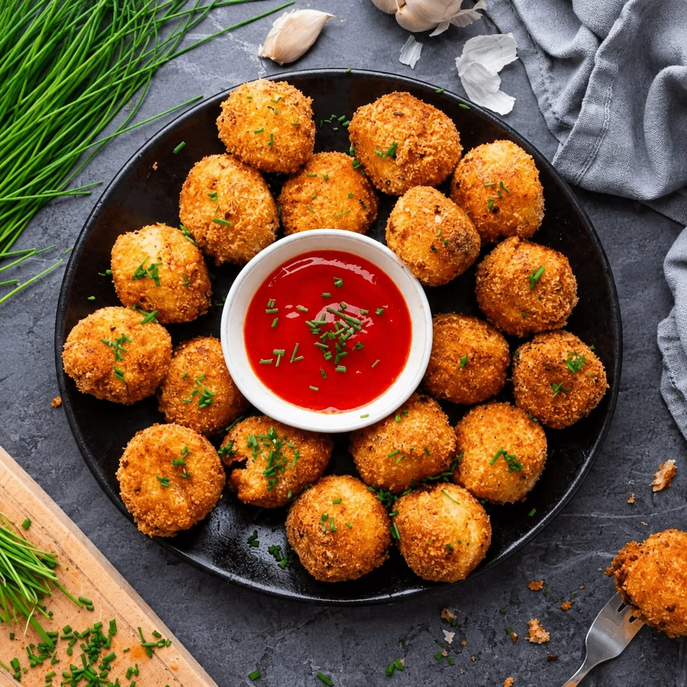

Arancini, bola nasi khas Italia dengan isian gurih, dibalut tepung roti hingga renyah keemasan. Nikmat disantap hangat dengan saus tomat.
Aranchini ala mafia Italia


Arancini, bola nasi khas Italia dengan isian gurih, dibalut tepung roti hingga renyah keemasan. Nikmat disantap hangat dengan saus tomat.